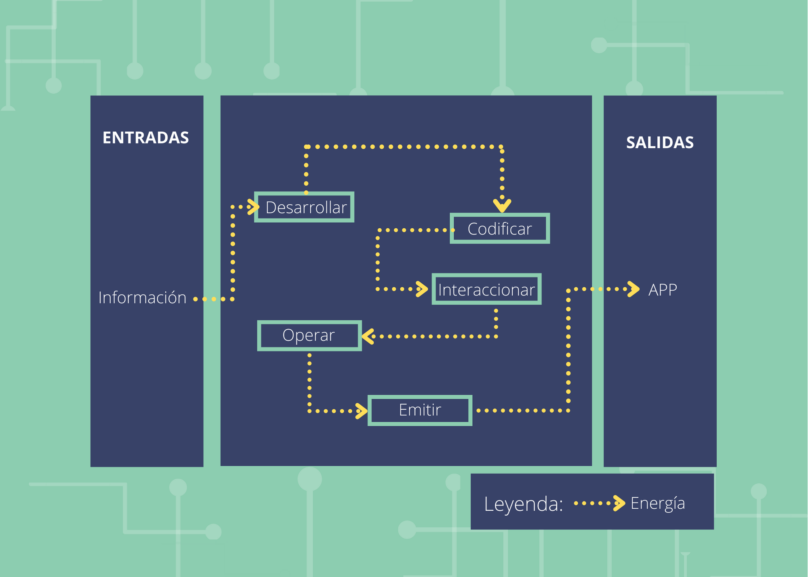
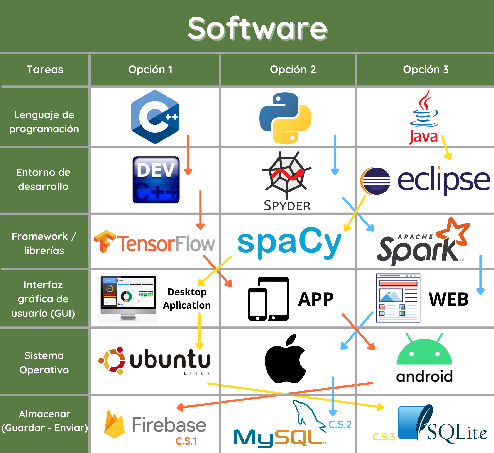

MATRIZ MORFOLÓGICA

EVALUACIÓN DE CONCEPTOS DE SOLUCIÓN

CONCLUSIÓN
En conclusión, se escogió el concepto solución 2 como concepto ganador porque logró cumplir la mayor cantidad de criterios. Este concepto de solución se basa principalmente en el uso de un sistema que mediante el número de parpadeos se podrá emitir un mensaje de forma oral. La captura del movimiento(parpadeo)será registrada por el sensor IR TCRT5000 y el arduino nano será el encargado de procesar dicho movimiento. De tal manera que el número de parpadeos haga referencia a una frase que luego sería emitida como mensaje de voz ya sea al celular del cuidador o mediante parlantes.